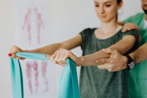
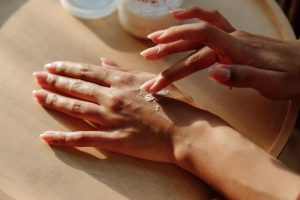
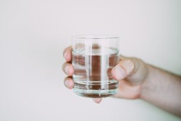
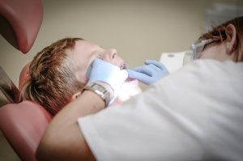

Traitements de la douleur
Médicamenteux :
- Paracétamol
- AINS (Anti-inflammatoires non stéroïdiens) – usage limité
- Antalgiques opioïdes (palier 2 ou 3) – avec prudence, usage limité
- Antidépresseurs tricycliques ou IRSNa – pour douleurs chroniques / neuropathiques
- Antiépileptiques (gabapentine, prégabaline) – pour douleurs neuropathiques
- Myorelaxants
- PEA (Palmitoyléthanolamide)
- MEOPA (protoxyde d'azote) – en cas de soins douloureux ou luxations
Non médicamenteux :
- Hypnose
- Relaxation
- TENS (neurostimulation électrique transcutanée)
- Acupuncture
- Thérapies cognitivo-comportementales
- Orthophoniste
- Orthoptiste
- Port d'attelles, orthèses de repos
- Rééducation / kinésithérapie adaptée / Balnéothérapie
- Ergothérapie
- Activité Physique Adaptée (Sport sur ordonnance)
Traitements de la fatigue
- Pas de traitement médicamenteux spécifique validé
- Levocarnil, Vitamine C, Vitamine D
- Prise en charge des causes associées (anémie, troubles du sommeil, etc.)
- Réentraînement à l'effort (activité physique douce et régulière)
- Sommeil : hygiène de vie, traitement des troubles associés
- Kinésithérapie régulière (proprioception, renforcement musculaire, gain d'amplitude douce)
- Orthèses (attelles, ceintures, semelles, vêtements compressifs…)
- Rééducation fonctionnelle
- Chirurgie orthopédique, à étudier selon les cas : en cas d'instabilité majeure (arthrodèse possible)
- Aides techniques à la mobilité (canne, déambulateur, fauteuil roulant manuel à propulsion électrique si nécessaire)

- Prévention : éviter les traumatismes, protection cutanée contre les frottements, crèmes hydratantes et protectrices.
- Soins chirurgicaux adaptés : suture par plans avec fil non résorbable, éviter colles / agrafes
Compléments :
- Acide ascorbique (vitamine C) : favorise la cicatrisation
- DDAVP (desmopressine) : en cas de tendance hémorragique documentée
- Pour faciliter la cicatrisation (bave d'escargot, avoine colloïdale… à tester sur petite zone en cas d'allergie)
- Maquillage correcteur ou chirurgie esthétique réparatrice si retentissement psychologique important

- Probiotiques, Inhibiteur pompe à protons, antispasmodiques, laxatifs selon les symptômes et traitements de fond pour la constipation
- Adaptation alimentaire (petits repas, éviter aliments irritants)
- Prise en charge multidisciplinaire : gastro-entérologue, diététicien(ne), médecin nutritionniste
- Nutrition entérale ou parentérale (cas rares et sévères)
Dysautonomie
Ex. : syndrome de tachycardie orthostatique posturale – POTS
- Hydratation abondante
- Supplémentation en sel
- Bas de contention
- Bétabloquants à faible dose
- Fludrocortisone ou midodrine (avec suivi spécialisé)
Troubles respiratoires
- Kinésithérapie respiratoire
- Ventilation non invasive (VNI) si apnées ou hypoventilation
- Orthèse d'avancée mandibulaire pour apnée obstructive, en fonction de la dentition
- VNC si apnées du sommeil (fréquentes dans le SED dues à la laxité des tissus)
- Éviter les interventions ORL inutiles, sauf en dernier recours

- Psychothérapie (TCC, soutien psychologique)
- Traitement de l'anxiété ou dépression si besoin
- Suivi neuropsychologique (chez l'enfant en particulier)
- Suivi dentaire régulier
- Brossage doux, dentifrice fluoré
- Prévention des gingivites / parodontopathies
- Orthodontie adaptée avec prudence

Bilan médical initial
Un bilan biologique
- Inflammation
- Immunité
- Vitamines
Imagerie médicale
- Radiographies
- Échographies
- IRM/Scanner
Avis spécialisés
- Ophtalmo
- Kinésithérapie
- Ergothérapie
Rééducation et soins physiques
Exercices
Exercices doux pour renforcer les muscles, stabiliser les articulations et diminuer les douleurs.
Appareillages
Appareillages (corsets, orthèses) et infiltrations si nécessaires.
Ergothérapie
Ergothérapie pour adapter les gestes du quotidien, l'école ou le travail.
Suivi rhumatologique
Le rhumatologue peut proposer
- Des bilans pour évaluer les douleurs, la fragilité osseuse ou une éventuelle ostéoporose.
- Des traitements spécifiques selon les douleurs : antalgiques, infiltrations, supplémentation en vitamine D.
Suivi neurologique et psychologique
Les troubles neurologiques possibles
- Céphalées fréquentes (traitées comme des migraines)
- Problèmes d'équilibre, instabilité cervicale, parfois malformation de Chiari ou kystes
- Troubles de la mémoire ou de la concentration, souvent liés à la douleur et à la fatigue
Sur le plan psychologique
Les patients peuvent se sentir isolés ou incompris. Un suivi psychologique est souvent nécessaire, surtout pour les personnes atteintes de SED hypermobile. Une approche de type thérapie cognitive et comportementale est recommandée.
Aspects sociaux
Un accompagnement social est essentiel pour :
- Obtenir des aides financières (ALD, Invalidité, MDPH)
- Adapter les conditions de travail (ergonomie, télétravail, réduction du stress…)
- Maintenir une scolarité normale avec des aménagements (PAI, vie scolaire adaptée)